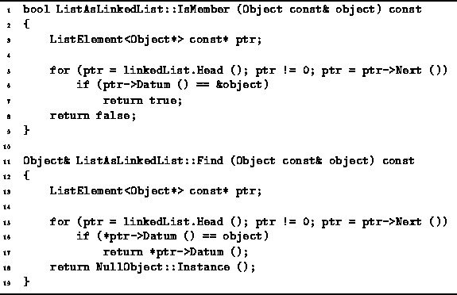
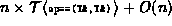

Data Structures and Algorithms
with Object-Oriented Design Patterns in C++
Data Structures and Algorithms
with Object-Oriented Design Patterns in C++
Program  defines the IsMember
and Find member functions of the ListAsLinkedList class.
The implementations of these functions are almost identical.
However, they differ in two key aspects--the comparison used and the return value.
defines the IsMember
and Find member functions of the ListAsLinkedList class.
The implementations of these functions are almost identical.
However, they differ in two key aspects--the comparison used and the return value.

Program: ListAsLinkedList Class IsMember and Find Member Function Definitions
The IsMember function tests whether
a particular object instance is contained in the ordered list.
It returns a Boolean value indicating whether the object is present.
The running time of this function is clearly O(n),
where  ,
the number of items in the ordered list.
,
the number of items in the ordered list.
The Find member function locates an object
which matches a given object.
The match is determined by using operator==.
Find returns a reference to the matching object if one is found.
Otherwise, it returns a reference to the NullObject instance.
The running time for this function,
is ,
where  is the time required to do the comparison,
and
is the time required to do the comparison,
and  is the number of items in the ordered list.
This simplifies to O(n) when the comparison can be done in constant time.
is the number of items in the ordered list.
This simplifies to O(n) when the comparison can be done in constant time.
 Copyright © 1997 by Bruno R. Preiss, P.Eng. All rights reserved.
Copyright © 1997 by Bruno R. Preiss, P.Eng. All rights reserved.